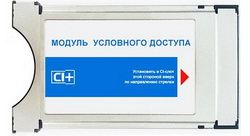

Триколор — мультиплатформенный оператор цифровой среды, предоставляющий комплекс цифровых услуг и сервисов, включающих телесмотрение. Триколор создает единое информационное пространство развлечений и сервисов для всей семьи, доступное с любого устройства, в любом месте и вне зависимости от времени. Осуществляет вещание на всей территории России.
Наряду с традиционным просмотром ТВ через спутник, потребители Триколора могут использовать для просмотра телеканалов интернет-подключение, а также высокотехнологичные возможности управления эфиром: «Телеархив», «Смотри с начала», систему рекомендаций контента «Лучшее на ТВ». Триколор также предоставляет доступ к спутниковому интернету.По итогам 2-го квартала 2019 года общая база оператора составила 12,232 млн клиентов, в том числе более 10 млн подписчиков HDTV и 100 тыс. UHD-пользователей. В 2018 году оператор занял пятую строчку в рейтинге крупнейших мировых операторов платного телевидения.
Оборудование
Сервер A230

8500 руб.
Подробнее
ПрошивкаСервер E502

7500 руб.
Подробнее
ПрошивкаСервер B528

6500 руб.
Подробнее
ПрошивкаСервер B532M

6000 руб.
Подробнее
ПрошивкаDTS-54

2000 руб.
Подробнее
Клиент С592

3500 руб.
Подробнее
ПрошивкаСистема для приема цифрового спутникового телевидения В532М/С592

8000 руб.
Прошивки
B532M C592Модуль условного доступа Conditional Access Module CI+

5000 руб.
Подробнее
Модуль условного доступа электронный Conditional Access Module CI+ Delgado
3500 руб.
Подробнее
Тариф Единый Ultra HD 2500 руб. на год
Твой новый Триколор
Смотрите ТВ через спутник и через интернет, а также на разных экранах с помощью приложения «Триколор Онлайн ТВ».
- За 299 рублей в месяц вы получаете:
- Доступ к просмотру 220 разножанровых каналов.
- Приёмник с поддержкой новых сервисов Триколора для управления ТВ (просмотр с начала, пауза, перемотка, архив телепередач), который можно использовать для просмотра ТВ через спутник и интернет*.
- Спутниковую антенну.
- Бесплатное сервисное обслуживание после завершения гарантийного срока.
Программа «Триколор Бонус»
Это возможность участия в акциях (в т. ч. акциях по обмену оборудования), получение призов и подарков по акциям, а также предоставление скидок на приемное оборудование в интернет-магазине (скидка предоставляется продавцом оборудования).
Подробнее на bonus.tricolor.tv
Акции по обмену
Сверхвыгодный обмен в рассрочку
Рассрочка без переплат: всего 199 руб. в месяц за обмен приёмника вместе с абонентской платой за пакет «Единый» в течение 25 месяцев.
 Подробнее
Подробнее
Обмен на комплект для просмотра на двух экранах
Комплект для просмотра каналов Триколора на двух экранах и возможностью использования современных сервисов.
Подробнее
Обмен на двухтюнерный приёмник
Современный HD-приёмник с возможностью записи эфира и подключения мобильных устройств.
Подробнее
Обмен на модуль CI+ Delgado
Компактный модуль с возможностью просмотра телеканалов в формате Ultra HD.
ПодробнееУстановка
Производится в Таганроге, Неклиновском и Матвеево-Курганском районах
Гарантия
Все гарантийные обязательства от производителя (электронная 12 мес.) + послегарантийная (платная).
Пакеты услуг

«Единый» (1500 руб. в год), «Единый Мульти Лайт» (1500 руб. в год) и «Единый Мульти» (2000 руб. в год). 221 канал, 37 в формате HD, 2 в формате UHD, 47 радиостанций.
Подробнее

«Единый Ultra HD» (2500 руб. в год). 227 каналов, 37 в формате HD, 8 в формате UHD, 47 радиостанций.
Подробнее


«Мультирум» (500 руб. в год). «Мультирум»* позволит вам целый год наслаждаться любимыми каналами любых подключенных дополнительных пакетов — «Детский», «Наш Футбол», «Ночной», «МАТЧ! Футбол» и «Ultra HD» — сразу на двух телевизорах.
Подробнее


Телепрограмма
Спутниковый интернет
Спутниковый интернет помогает там, где отсутствует или недостаточно развита наземная телекоммуникационная инфраструктура, например, в загородном доме или удаленном коттедже. Спутниковое подключение можно использовать для передачи телеметрической информации, видеонаблюдений и видеоконференций, поиска необходимых данных или просто для собственного развлечения.
ПодробнееАдреса:
Магазины Антенный Мир
Таганрог, Гоголевский 29а, Центральный рынок
Вторник-воскресенье с 8 до 15


Таганрог, Пархоменко 7-19
Вторник-воскресенье с 10 до 18.30


Таганрог, Пархоменко 7-20, "Салон-Магазин Триколор ТВ"
Вторник-воскресенье с 10 до 18.30